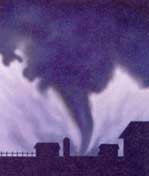

April and May are the prime months for tornadoes in much of the United States. A little knowledge about these deadly storms can go a long way toward guarding your safety. Here are a few tornado myths and misconceptions to watch out for:
A tornado watch means you should seek shelter immediately.
False. If your area is under a watch, that merely means the weather conditions are favorable for the formation of a tornado - stay alert and listen for further updates. If you hear that a tornado warning has been issued for your town or county, that means a tornado has been sighted or indicated by weather radar, and may be headed in your direction. Take shelter as soon as possible. And, if possible, stay tuned to NOAA weather radio information, or local radio and television stations.
Tornadoes strike only trailer parks.
False. Trailer homes are not tornado magnets, but they do tend to sustain greater damage than more substantial houses. If you live in a mobile home, plan to hide out in a stable, nearby structure when tornadoes threaten.
Tornadoes don't happen in my part of the country.
False. In fact, tornadoes have occurred in every state, even Alaska. They are less common in some regions than others, but you should know basic tornado safety wherever you live. Check out the history of tornadoes in your area through The Tornado Project, the Tornado History Project, the Online Tornado FAQ, and USA Today's historical information on tornadoes.
If a tornado is nearby, open some of your windows to prevent pressure from building up.
False. Window destruction probably has more to do with lift and shear than with air pressure; your time would be more wisely spent seeking appropriate shelter.
In the event of a tornado emergency, seek shelter in the southwest corner of your home.
False. Your best bet is to lay low in a storm shelter or basement or, lacking subterranean digs, seek shelter near a strong interior wall of your house.
|
 It's important to know how to prepare for a surprise tornado. |
|
|